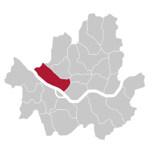

Mapo District (Mapo-gu)
is a gu, or district, within Seoul, South Korea. It lies northwest of the Han River. Several universities and government buildings are located there.
Mapo is well known for the Hongdae club district around Hongik University.
Seoul Metropolitan Subway Line 2, Line 5 and Line 6 pass through this district.
The Seoul World Cup Stadium, a famous landmark in Seoul, is located in Sangam town in northwest Mapo.
Neighboring districts include Yongsan, Jung, Seodaemun and Eunpyeong Districts.
Mapo District Office is located in Seongsan-2 precinct, near World Cup Stadium (5 minutes on foot).
Seoul Metropolitan Subway Line 6 passes near the office,
and it has a station name "Mapo-gu Office" 150 metres (490 ft) east of the office